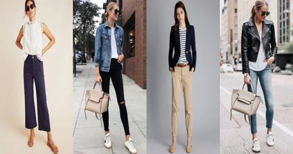
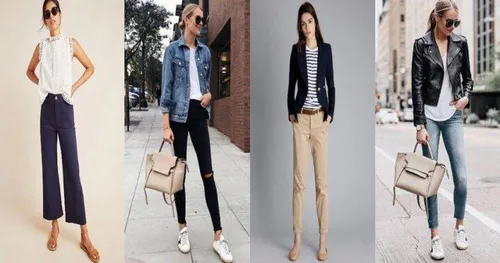
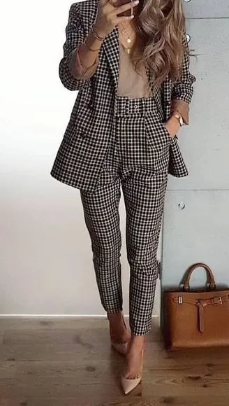
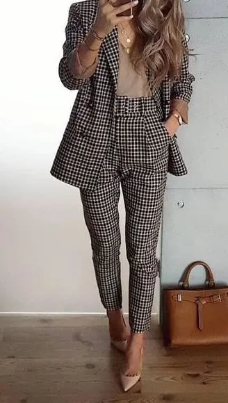
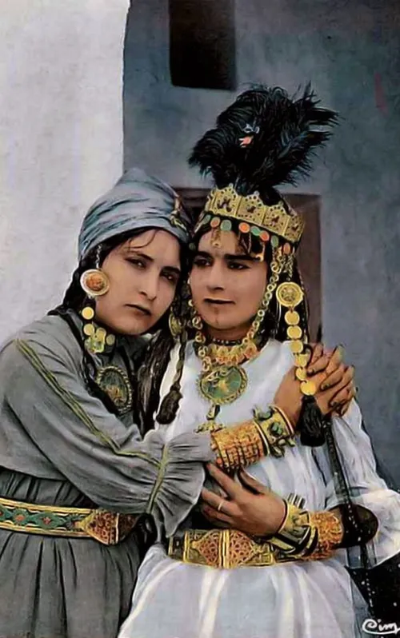
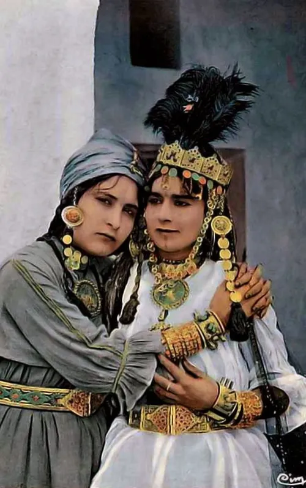
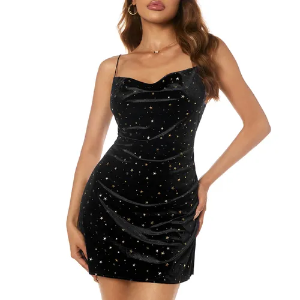
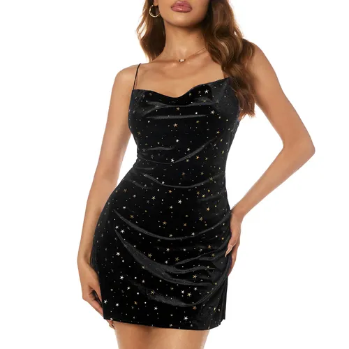

Welcome to 50 Fashions! by Sheila Pink
We're thrilled you're here. Discover your unique style with our wide range of trendy and timeless clothing for every occasion. Explore our collections, find inspiration, and express yourself through fashion.
Shop Now
Posted
4h...ago
CASUAL WEARS


Women's casual wear has evolved beyond simply being comfortable. Today, it's about expressing personal style while embracing ease and versatility. From breezy dresses and skirts to comfy jeans and leggings, the options are endless.
Posted
4h...ago
OFFICE WEARS


Women's office wear has come a long way from the days of restrictive suits and uncomfortable heels. Today, there are more options than ever before, allowing women to express their personal style while still maintaining a professional appearance.
Posted
4h...ago
CULTURAL WEARS


Women's cultural wear serves as a vibrant expression of identity, heritage, and belonging. From the flowing sarees of India to the intricate kimonos of Japan, each garment carries a unique story, woven with centuries-old traditions and passed down through generations.
Posted
7h...ago
PARTY DRESSES


Party season is upon us, and it's time to find the perfect outfit to make you shine. Whether you're attending a glittering gala, a casual cocktail party, or a vibrant dance club event, there's a women's party dress waiting to make you feel confident and fabulous.